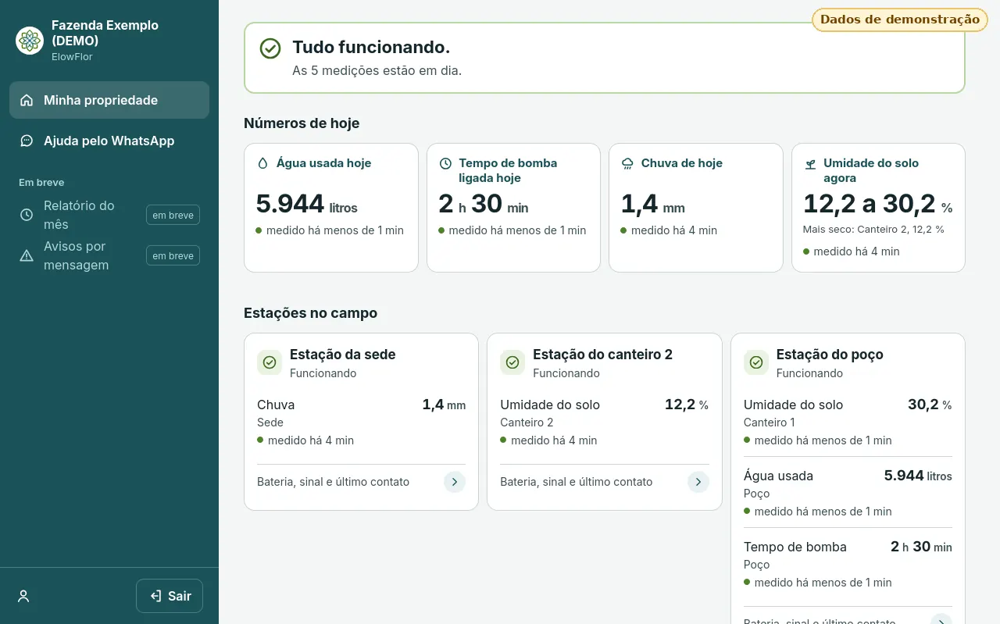
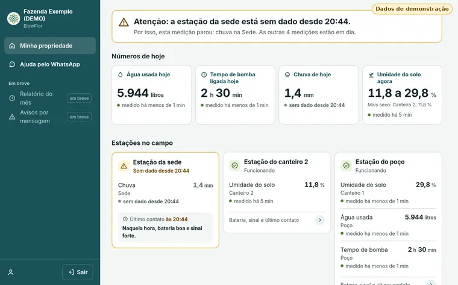

O que acontece longe da sede, num só painel.
Estações solares da ElowFlor medem nos pontos que importam e mandam os dados sozinhas, sem ninguém digitar. Tudo aparece num só painel. Para pequenos e médios produtores rurais.
Conversar no WhatsAppOs dados vão por rádio até a sede. Não depende de internet em cada ponto do campo.

O que a estação mede
Cada estação aceita vários sensores ao mesmo tempo, digitais, analógicos ou de contato liga-desliga. Por exemplo:
- Água, pelo hidrômetro
- Bomba ligada ou desligada
- Chuva, pelo pluviômetro
- Umidade do solo
E também nível de reservatório, boias e outros sensores do mesmo tipo.

Quando algo para, a tela avisa
Os números vêm do campo sem ninguém digitar. Se uma estação para de mandar dado, a tela diz qual foi e quais medições pararam junto.
Como funciona
- Estação solar no campoVários sensores ligados nela: bombas, hidrômetros, pluviômetros, boias, nível e umidade do solo.
- Rádio de longo alcanceLeva os dados até a sede. Não depende de internet nem de tomada em cada ponto do campo.
- Um só painelTudo o que as estações mandam, num só lugar, em telas feitas para o celular e para o computador.
Para quem
Pequenos e médios produtores rurais, de lavoura, estufa, hidroponia e todas aquelas propriedades que queiram receber a informação do campo na palma da mão.
De onde viemos
Nascemos de um desafio de inovação que uma indústria do agronegócio lançou a estudantes de engenharia. Fundada em 2026, a ElowFlor projeta e desenvolve o próprio equipamento, no Brasil.